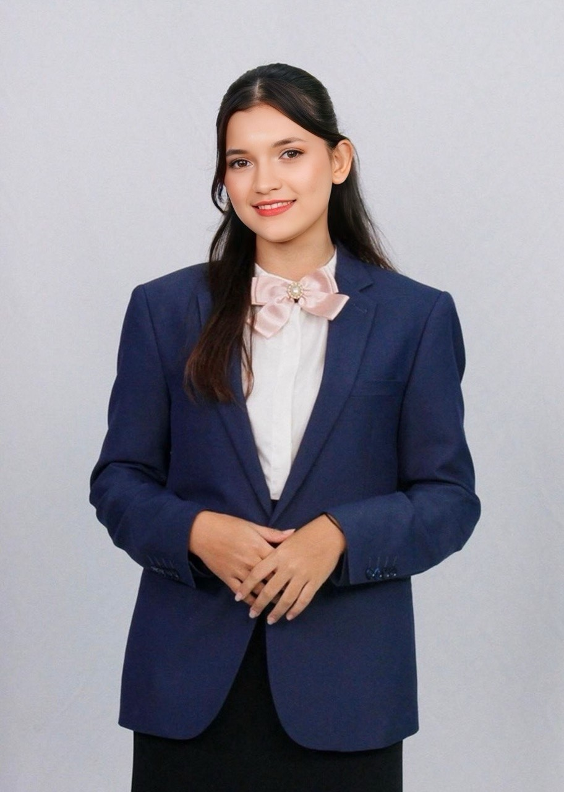
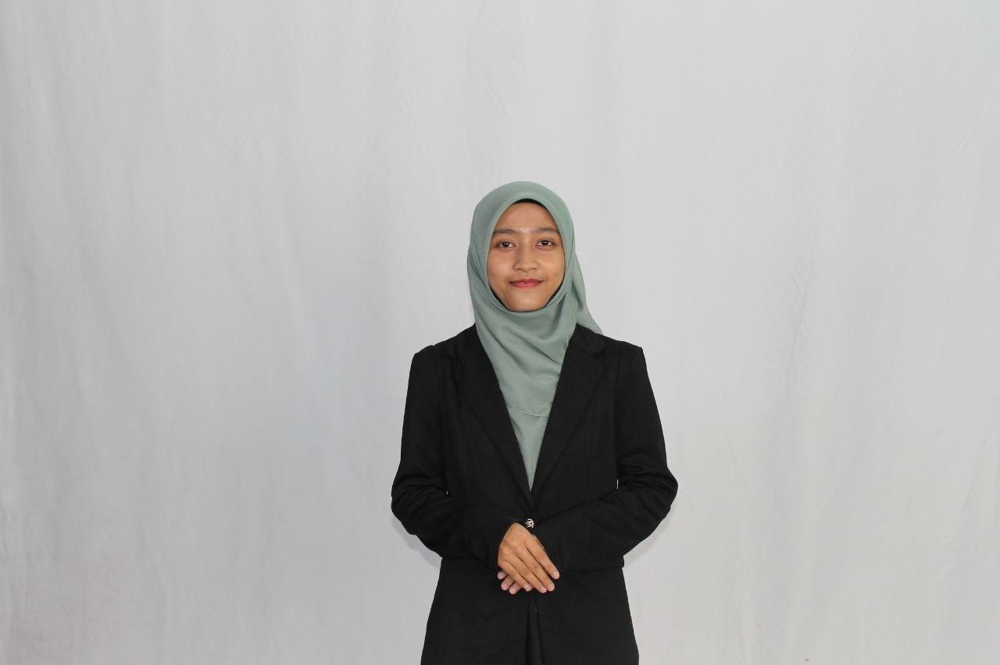
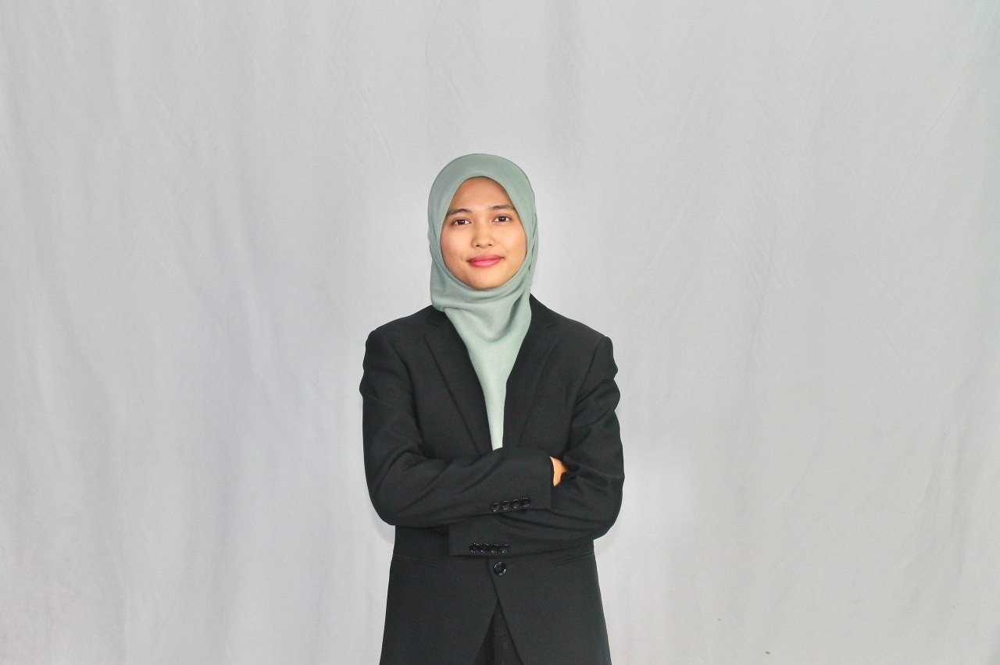

Terokai bagaimana perkembangan teknologi mempengaruhi pendidikan, ekonomi, masyarakat, pentadbiran dan identiti nasional Malaysia — serta tanggungjawab kita membina masa depan digital yang inklusif.
🇲🇾
💡 Inovasi🤝 Perpaduan🌐 Digital
Pembuka bicara · Aspirasi Negara
Menghayati Aspirasi Negara Melalui Muzik
Sebagai pembuka penerokaan, hayati lagu dan muzik video tentang Aspirasi Negara. Perhatikan mesej, nilai dan semangat kebersamaan yang disampaikan, kemudian fikirkan bagaimana teknologi boleh dimanfaatkan untuk memperkukuh perpaduan serta pembentukan negara bangsa Malaysia.
Tonton dan hayati mesej dalam muzik video ini sebagai pengenalan kepada perbincangan kita tentang Aspirasi Negara, identiti nasional dan perpaduan rakyat Malaysia.
MEET THE TEAM · MALAYSIA DIGITAL
Kenali Ahli Kumpulan
Pilih nama untuk melihat profil ahli kumpulan kami.

Ahli Kumpulan 01
Mimi Wimplinger
No. matrik: P22121378
Ahli kumpulan bagi projek Teknologi Pemacu Negara Bangsa.

Ahli Kumpulan 02
Siti Norhanisah binti Abdul Jabar
No. matrik: P22121379
Ahli kumpulan bagi projek Teknologi Pemacu Negara Bangsa.

Ahli Kumpulan 03
Nuha Amni binti Yusri
No. matrik: P22123834
Ahli kumpulan bagi projek Teknologi Pemacu Negara Bangsa.
Tekan nama ahli untuk membuka profil. Pilih nama lain untuk bertukar profil atau tekan butang tutup untuk menyembunyikannya.
Peta penerokaan
Terokai tujuh ruang pembelajaran
Setiap ruang menghubungkan fakta, contoh Malaysia dan persoalan untuk difikirkan bersama.
🇲🇾
01 · Aspirasi Malaysia
Kenali hubungan teknologi dengan perpaduan, identiti nasional dan kemajuan negara.
🧭
02 · Pengaruh teknologi
Lihat perubahan dalam pendidikan, ekonomi, sosial, pentadbiran dan budaya.
⚖️
03 · Kesan teknologi
Nilai peluang dan risiko teknologi terhadap keharmonian negara bangsa.
📊
04 · Data Malaysia
Gunakan statistik rasmi untuk menyokong hujah dan penilaian.
🛠️
05 · Tindakan bersama
Analisis isu sebenar dan pilih tindakan yang bertanggungjawab.
🏆
06 · Kuiz & refleksi
Uji kefahaman dan kongsi satu tindakan digital yang boleh diamalkan.
Soalan pencetus: Adakah teknologi menjadikan rakyat Malaysia semakin bersatu atau semakin berpecah? Simpan jawapan awal anda — kita akan kembali kepada persoalan ini selepas penerokaan.
01 · Asas pemikiran
Aspirasi Malaysia
Teknologi perlu menyokong pembentukan masyarakat yang bersatu padu, beridentiti nasional, berpengetahuan dan berdaya saing.
Konsep
Apakah negara bangsa?
Negara bangsa merujuk kepada pembinaan sebuah negara yang mempunyai identiti kebangsaan, rasa kekitaan, kesetiaan dan kesepaduan dalam kalangan rakyat. Dalam konteks Malaysia, pembinaan identiti bersama perlu meraikan kepelbagaian kaum, agama, bahasa dan budaya.
Huraian berasaskan Dasar Perpaduan Negara (2021).
Konteks digital
Mengapa teknologi penting?
Teknologi mengubah cara rakyat belajar, bekerja, berkomunikasi dan berurusan dengan kerajaan. Oleh itu, ruang digital turut menjadi ruang pembentukan pendapat, identiti, kepercayaan dan hubungan sosial.
Rujuk MyDIGITAL (2021) dan Dasar Pendidikan Digital (2023).
Aspirasi dan aplikasi
Tekan setiap kad untuk meneroka
Pilih aspirasi untuk melihat bagaimana teknologi boleh menyokongnya.
Pilih satu aspirasi
Kandungan penerangan akan dipaparkan di sini.
Teknologi tidak menjamin perpaduan secara automatik. Perpaduan terbina apabila teknologi digunakan dengan empati, tanggungjawab dan rasa hormat.
Aktiviti audiens — Padankan Aspirasi: Minta audiens padankan contoh seperti video warisan, kelas dalam talian, kempen kejiranan digital dan perniagaan dalam talian dengan aspirasi yang sesuai. Minta mereka jelaskan alasan, bukan sekadar memilih jawapan.
02 · Perubahan dalam kehidupan
Pengaruh teknologi
Teknologi digital mempengaruhi pelbagai bidang. Pilih bidang untuk melihat contoh Malaysia dan kaitannya dengan negara bangsa.
🎓 Pendidikan digital
Platform pembelajaran, bahan multimedia dan kelas dalam talian memperluas akses kepada ilmu. Dasar Pendidikan Digital KPM (2023) memberi tumpuan kepada murid fasih digital, pendidik kompeten dan kandungan berkualiti. Contoh Malaysia: DELIMa. Hubungan negara bangsa: melahirkan masyarakat berpengetahuan dan meningkatkan peluang pembelajaran, dengan syarat jurang akses diberi perhatian.
Hubungan sebab dan kesan
Bagaimana bidang ini membentuk negara?
Perubahan yang berlaku
Pembelajaran boleh berlaku melalui platform digital, bahan interaktif dan kolaborasi jarak jauh.
Kaitan dengan negara bangsa
Meluaskan akses ilmu dan membina kemahiran generasi masa hadapan.
Soalan analisis: Adakah akses kepada teknologi yang sama bermakna semua murid mendapat peluang pembelajaran yang sama? Jelaskan dengan mengambil kira peranti, sambungan internet, kemahiran dan sokongan keluarga.
03 · Penilaian kritis
Peluang dan cabaran
Teknologi membawa manfaat, tetapi turut mewujudkan risiko. Kesan akhirnya bergantung pada akses, kemahiran, etika dan cara penggunaannya.
Peluang
🌱 Kesan positif
Perpaduan: memudahkan interaksi dan kerjasama komuniti berlainan latar belakang.
Ekonomi: membuka peluang keusahawanan, pemasaran dan pekerjaan digital.
Pendidikan: memperluas sumber pembelajaran dan perkongsian ilmu.
Pentadbiran: memudahkan akses kepada maklumat dan perkhidmatan kerajaan.
Budaya: mendokumentasikan serta memperkenalkan warisan tempatan.
Risiko
⚠️ Kesan negatif
Maklumat palsu: boleh mencetuskan salah faham dan ketegangan.
Jurang digital: akses dan kemahiran yang tidak seimbang mengehadkan peluang.
Buli siber: menjejaskan keselamatan, maruah dan kesejahteraan individu.
Polarisasi: kandungan yang memecahbelahkan boleh mengukuhkan prasangka.
Privasi: perkongsian data tanpa berhati-hati boleh mendedahkan maklumat peribadi.
Uji pertimbangan
Peluang atau ancaman?
Pilih jawapan bagi setiap situasi. Kemudian bincangkan alasan bersama audiens.
1. Usahawan kecil di kawasan luar bandar memasarkan produk tempatan melalui platform e-dagang.
2. Pengguna menyebarkan dakwaan sensitif tentang sesuatu komuniti tanpa menyemak kesahihannya.
3. Sekolah menggunakan bahan digital tetapi sebahagian murid tidak mempunyai peranti atau internet stabil.
Kesimpulan kritis: Teknologi bukan baik atau buruk secara mutlak. Dasar yang inklusif, literasi digital, etika dan tanggungjawab pengguna menentukan sama ada teknologi memperkukuh atau melemahkan kesepaduan negara bangsa.
04 · Bukti dan statistik
Malaysia dalam angka digital
Gunakan data untuk menyokong hujah. Semak tahun, definisi indikator dan sumber asal sebelum membuat perbandingan.
Individu menggunakan internet · 2025
98.3%
Penggunaan internet dalam kalangan individu berumur 15 tahun dan ke atas.
Indikator individu, bukan isi rumah.Akses internet isi rumah · 2025
97.1%
Isi rumah Malaysia yang mempunyai akses internet.
Bandar: 99.0% · Luar bandar: 90.7%.Sumbangan ICT dan e-dagang · 2025
RM476.8b
Nilai sumbangan industri ICT dan e-dagang kepada KDNK Malaysia.
23.5% daripada KDNK negara.
Jurang akses bandar dan luar bandar
DOSM melaporkan akses internet isi rumah pada 2025 sebanyak 99.0% di kawasan bandar dan 90.7% di kawasan luar bandar. Perbezaan 8.3 mata peratus ini menunjukkan bahawa kadar akses nasional yang tinggi tidak bermakna semua komuniti menikmati peluang yang sama.
Bandar · 99.0%
Luar bandar · 90.7%
Sumber: DOSM, ICT Use and Access by Individuals and Households Survey Report 2025 (diterbitkan 23 April 2026).
Cara membaca data: Angka 98.3% ialah penggunaan internet oleh individu berumur 15 tahun ke atas; 97.1% ialah akses internet isi rumah; 99.0% dan 90.7% membandingkan akses isi rumah bandar dan luar bandar. Jangan bandingkan indikator yang berlainan seolah-olah mengukur perkara yang sama.
Aktiviti analisis
Apakah maksud data ini?
Jika akses internet luar bandar lebih rendah berbanding bandar, apakah implikasi yang mungkin berlaku?
Nota integriti data: angka di atas menggunakan penerbitan DOSM yang tersedia setakat 2 November 2026. Penggunaan internet individu merujuk kepada individu berumur 15 tahun ke atas; akses internet isi rumah ialah indikator berasingan. Semak jadual dan nota metodologi laporan asal sebelum pembentangan.
05 · Extension — pembelajaran melangkaui bilik kuliah
Daripada isu kepada tindakan
Hubungkan pembelajaran dengan komuniti. Kenal pasti cabaran sebenar, dengar pandangan pihak lain dan cadangkan tindakan yang boleh dilaksanakan.
🔎
Isu 1 · Maklumat palsu
Maklumat yang tidak disahkan boleh mengelirukan masyarakat dan menjejaskan kepercayaan.
Tindakan:
Semak sumber dan tarikh.
Bandingkan dengan sumber rasmi.
Jangan sebarkan kandungan yang belum disahkan.
📶
Isu 2 · Jurang digital
Perbezaan peranti, sambungan dan kemahiran boleh mengehadkan penyertaan dalam kehidupan digital.
Tindakan:
Adakan bimbingan literasi digital.
Kenal pasti komuniti yang memerlukan sokongan.
Galakkan akses dan bahan pembelajaran inklusif.
🫶
Isu 3 · Etika dan maruah
Penghinaan, buli siber dan pencerobohan privasi boleh menjejaskan hak serta maruah individu.
Tindakan:
Berkomunikasi dengan berhemah.
Minta izin sebelum berkongsi gambar atau data.
Hormati perbezaan budaya dan pandangan.
🏛️
Isu 4 · Identiti budaya
Warisan tempatan memerlukan usaha pendokumentasian dan perkongsian yang bertanggungjawab.
Tindakan:
Hasilkan kandungan warisan setempat.
Nyatakan sumber dan pemilik karya.
Dapatkan persetujuan komuniti yang terlibat.
Aktiviti membuat keputusan
Cabaran Digital Malaysia
Bincangkan situasi berikut dalam kumpulan kecil. Pilih tindakan dan jelaskan sebabnya.
Situasi simulasi
Mesej tular yang belum disahkan
Satu mesej tular mengandungi dakwaan sensitif berkaitan komuniti tertentu. Mesej itu mula dikongsi dalam kumpulan kejiranan. Apakah tindakan paling bertanggungjawab?
Minta audiens menerangkan bagaimana tindakan pilihan mereka melindungi maruah, mengurangkan salah faham dan menyokong perpaduan.
3E · Extension
Suara komuniti
Gunakan borang ini untuk aktiviti kelas. Untuk kutipan sebenar merentas peranti, sambungkan butang kepada Google Forms atau Microsoft Forms kumpulan.
Refleksi disimpan sementara dalam pelayar/peranti ini sahaja. Ia tidak dihantar kepada pembentang atau disimpan dalam pangkalan data. Untuk bukti Extension sebenar, kumpulan perlu mengumpul respons melalui borang dalam talian dan memaparkan dapatan agregat dengan izin responden.
Cadangan bukti Extension: Jalankan mini kajian ringkas bersama 5–10 orang secara sukarela (contohnya guru atau ahli komuniti). Tanya cabaran penggunaan teknologi dan cara teknologi boleh menyokong perpaduan. Paparkan ringkasan tanpa nama, kaedah kutipan, tarikh dan bilangan responden. Jangan mendakwa kajian telah dibuat jika belum dilaksanakan.
06 · Semak kefahaman
Kuiz & refleksi
Jawab lima soalan untuk menguji pemahaman tentang teknologi dan pembentukan negara bangsa Malaysia.
📝 Maklumat responden
Tidak perlu masukkan nombor telefon, alamat atau maklumat peribadi. Nama samaran/kod sahaja sudah memadai.
Keputusan kuiz
Refleksi akhir
Satu tindakan bermakna
Lengkapkan ayat ini dan kongsikan dengan audiens.
“Saya akan menggunakan teknologi secara bertanggungjawab dengan cara...”
07 · Integriti akademik
Rujukan & sumber digital
Utamakan sumber primer dan rasmi. Semak dokumen asal sebelum memetik fakta, statistik atau dasar dalam pembentangan.
Senarai rujukan utama
MyDIGITAL. (2021). Malaysia Digital Economy Blueprint. Dokumen rasmi PDF.
Kementerian Perpaduan Negara. (2021). Dasar Perpaduan Negara. Dokumen rasmi.
Kementerian Pendidikan Malaysia. (2023). Dasar Pendidikan Digital. Dokumen rasmi PDF.
Department of Statistics Malaysia. (2026). ICT Use and Access by Individuals and Households Survey Report, 2025. Laporan dan statistik rasmi.
Department of Statistics Malaysia. (2026). Information and Communication Technology Satellite Account 2025. Laporan dan statistik rasmi.
Department of Statistics Malaysia. (2025). Malaysia Digital Economy, 2025. Laporan rasmi.
OpenDOSM. (2025–2026). Internet Use by State and Sex. Set data rasmi.
Pautan portal DOSM dan kementerian ialah pintu masuk kepada penerbitan rasmi. Cari tajuk laporan yang dinyatakan dan masukkan pautan PDF atau halaman laporan yang tepat selepas kumpulan mengesahkannya. Jangan masukkan butiran jilid, nombor halaman atau DOI yang belum disemak.
Etika penggunaan bahan digital
Gunakan imej, video, muzik dan grafik yang mempunyai lesen sesuai atau kebenaran pemilik.
Nyatakan pencipta, tajuk, sumber dan lesen jika berkenaan.
Jangan paparkan wajah, nama atau maklumat responden tanpa persetujuan.
Elakkan kandungan stereotaip, diskriminasi, penghinaan dan kebencian.
Semak fakta dan tarikh penerbitan sebelum berkongsi.
Nota pembentangan: Setiap ahli kumpulan perlu menguasai sumber yang digunakan dan boleh menerangkan bagaimana sumber tersebut menyokong hujah. Senarai rujukan bukan hiasan — ia bukti akauntabiliti akademik.